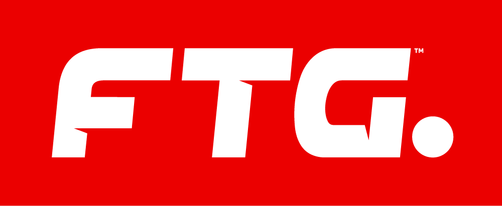
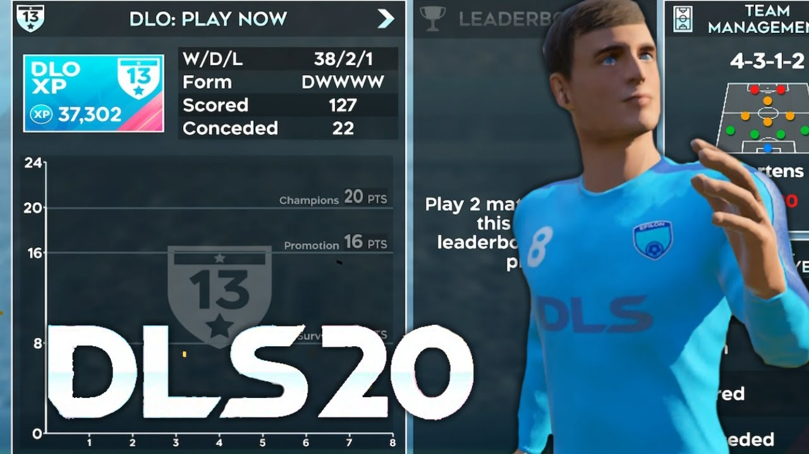

First Touch Games

First Touch Games Ltd es una compañía de juegos fundada en 2011 en Oxford, que produce principalmente juegos móviles con temáticas del fútbol. Antes de fundar la compañía, First Touch Games era una compañía que estaba bajo el control de Exient.
First Touch Games es especialmente conocido por sus juegos de fútbol como First Touch Soccer (FTS), Dream League Soccer y Score! World Goals con más de mil goles de fútbol reales para jugar. Uno de los primeros juegos de la compañía, First Touch Soccer también producido por X2 Games, fue el primer juego de fútbol para dispositivos iOS. Según la compañía, sus juegos son unos de más populares en la App Store. El valor estimado de la empresa es de 28 millones dólares.
Somos un estudio independiente galardonado establecido en 2011, que desarrolla juegos deportivos a través de plataformas de descarga digital. Con más de 750 millones de descargas de nuestros juegos hasta la fecha y varios puestos número uno en las listas de App Store.
